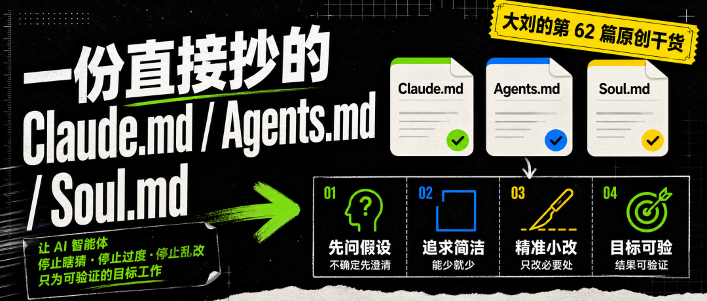
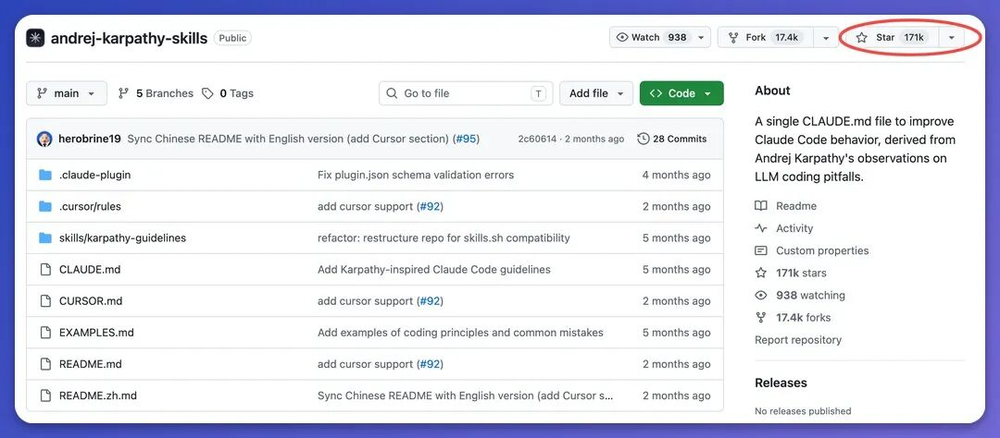
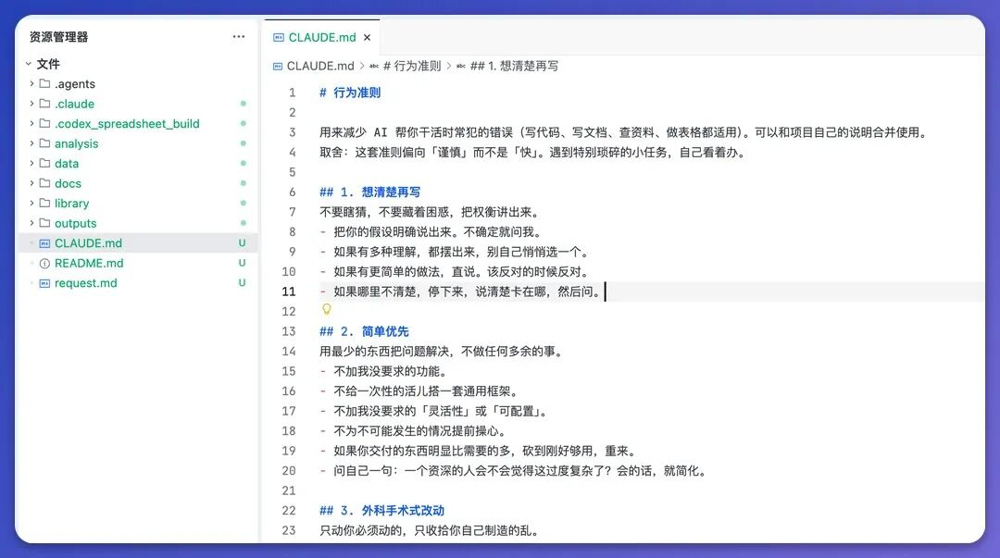

一份直接抄的 Claude.md / Agents.md / Soul.md

📝 编辑 / 排版: 大刘
🎨 编号:这是大刘的第 62 篇原创干货
我的 Claude 和 Codex 都用上了这个小技巧。
大佬 Karpathy 在 GitHub 上公开了一份 CLAUDE.md，特别短，就四条规矩，火爆整个 AI 圈。
Github 上 Star数量：17w+，有点离谱。

我拿过来，按自己的理解弄成中文版，一个字没改，Claude 和 Codex 都用了一段时间。
这东西在 Claude Code 里叫 CLAUDE.md，在 Codex 里叫 AGENTS.md。
本质都一样，就是一份纯文本，Agent 每次干活前先读一遍，照着办。
今天就把 Karpathy 这四条规则逐条讲清楚，每条在治哪个老毛病，我自己用下来什么体感。
然后再给你一份去掉冗余、能整段复制走的中文成品。
第一条：想清楚再写。
Agent 最爱干的一件事，就是拿到个模糊需求不问你，自己脑补一个就闷头开干。
比如说发个指令"帮我写个活动方案"，它默认线下活动，写完才发现要的是线上，整个推倒重来，这种情况很常见。
这条规则就是让它把猜的东西先摊出来，拿不准就问，有好几种理解就都列给你看，觉得有更省事的路也直说。
我加完最直接的变化，就是它开始问我了，先停一下"你是要 A 还是 B"。前面多这一句，比后面返工省太多。
第二条：简单优先。
这条很重要。Agent 在做事的时候太想“显得自己很专业”。
就坏导致你要个三列的小表，它自作主张给你加一堆没要的列这种情况。东西没变好用，反而更难看。
这一条规则这儿有个特好用的自检：两百行能用五十行写完，就重来；再问一句"老手会不会嫌器这过度复杂"，如果是，就尝试砍掉。
我自己的体感是，加完它就不瞎搭那种很复杂的架子了，要短的就给我短的。
第三条：外科手术式改动。
外科手术式改动。主打个“点到为止”。
Agent 有个巨大的毛病，就是手痒。你让它改文档里某一段，它顺手把旁边好好的标题也"优化"了，但是，我根本不需要啊。
所以这条规矩很简单：只动你让它动的地方，别翻新没坏的东西，跟着原来的风格走，哪怕你自己会用别的写法。
加完最舒服的是每次改动的审核变快了，改动少，心里踏实。
第四条：目标驱动执行。
这条是为我们准备的，解决一个问题，我们说不清楚到底要 AI 干嘛。
你说"把这篇整理好""让它能用"，它没法验，到底算不算好，它不知道你也不知道，只能来回拉扯。
招就一个：给它一条能自己对答案的标准。让它整资料，"整理好"就翻成"按这三个维度分类、每条配一句出处"，它照着跑、跑到达标为止。写代码也是这套，"加个校验"翻成"先写非法输入的测试再让它通过"，一个意思。说白了，别给它没法打分的活，给个能自己对答案的，它自己跑自己验，我就不用一直盯着了。
四条讲完了。
你回头看会发现，这四条其实是一类东西，都是在管 Agent 的"手"，不让它乱伸。想清楚再写、简单优先、只动该动的、把目标钉死，核心就一个意思：让 Agent 少自作主张，多照你的真实需求来。
下面是我把这四条整理成的中文版本，去掉了原版里偏开发的零碎，也是我长期用的版本，可以整段复制走。
用来减少 AI 帮你干活时常犯的错误（写代码、写文档、查资料、做表格都适用）。可以和项目自己的说明合并使用。
取舍：这套准则偏向「谨慎」而不是「快」。遇到特别琐碎的小任务，自己看着办。
## 1. 想清楚再写
不要瞎猜，不要藏着困惑，把权衡讲出来。
-把你的假设明确说出来。不确定就问我。
-如果有多种理解，都摆出来，别自己悄悄选一个。
-如果有更简单的做法，直说。该反对的时候反对。
-如果哪里不清楚，停下来，说清楚卡在哪，然后问。
## 2. 简单优先
用最少的东西把问题解决，不做任何多余的事。
-不加我没要求的功能。
-不给一次性的活儿搭一套通用框架。
-不加我没要求的「灵活性」或「可配置」。
-不为不可能发生的情况提前操心。
-如果你交付的东西明显比需要的多，砍到刚好够用，重来。
-问自己一句：一个资深的人会不会觉得这过度复杂了？会的话，就简化。
## 3. 外科手术式改动
只动你必须动的，只收拾你自己制造的乱。
-不要去「改进」旁边没让你碰的内容、格式。
-不要翻新没坏的东西。
-跟着原本的风格走，哪怕你自己会用别的写法。
-看到无关的、原本就有的多余内容，提一句就行，别删。
-只收拾你这次改动产生的多余东西；原本就有的旧内容，不让你删就别删。
-一条判据：每一处改动，都要能直接追溯到我的需求。
## 4. 目标驱动执行
先定清楚「做到什么算成功」，然后对着标准跑到达标。
-「把这份资料整理好」→「按这三个维度分类（是什么、做什么、怎么做），每条梳理内容配一句出处」。
-（写代码的话）「加个校验」→「先写针对非法输入的测试，再让它们通过」。
-（写代码的话）「修复这个 bug」→「先写一个能复现 bug 的测试，再让它通过」。
-多步任务，先说一个简短计划，每一步对应一个验证点。
-成功标准给得够强，你才能自己对答案；标准太虚（比如「弄好就行」），就只能不停来问我。
这套准则起作用的标志：交付里没必要的多余动作变少了，因为过度复杂而返工的次数变少了，该问清楚的问题在动手之前就问了，而不是出错之后才问。
下面说怎么放。
最关键的一点，也是我自己用下来觉得最省事的：这一份内容，两边都认，一个字都不用改。
放进 Claude Code，它叫 CLAUDE.md；放进 Codex，它叫 AGENTS.md。内容一模一样，只是文件名不同。
因为这俩本质都是同一种东西，纯文本的常驻指令，Agent 干活前都会先读。所以你维护一份就够了，不用为两个工具各写一套。
具体放哪，我分开说。
如果你用 Claude Code：
▸ 想只对某个项目生效，就放在那个项目的根目录，命名 CLAUDE.md（也就是 ./CLAUDE.md）。
▸ 想全局生效，不管打开哪个项目都加载，就放在 ~/.claude/CLAUDE.md。

如果你用 Codex：
▸ 想全局生效，放在 ~/.codex/AGENTS.md。
▸ 也可以用桌面端来填，打开设置 → 个性化 → 自定义指令，把上面那份内容粘进去就行。
▸ 想只对某个项目生效，就放在那个项目里，命名 AGENTS.md。
就这么简单。建议你别想着一上来就把它调到完美。
先原样复制进去，用一周，看 Agent 哪些地方还是不太对你的脾气，再回头补一两条。
一份好用的准则，是慢慢长成你自己协作习惯的，不是一次写死的。
希望对你有点用。
以上，既然看到这里了，
如果觉得不错，随手点个赞、在看、转发三连吧，
如果想第一时间收到推送，也可以给我个星标⭐～
谢谢你看我的文章
你的关注是我持续更新的动力～
我是谁
我是 AI大刘，北大毕业，大模型研究方向，腾讯犀牛鸟，先后在腾讯、百度的大模型研发部门。现在斜杠青年：给多家国企做AI顾问 \ OPC \ 研究员 \ 产品独立开发者 \ Vibe Coder